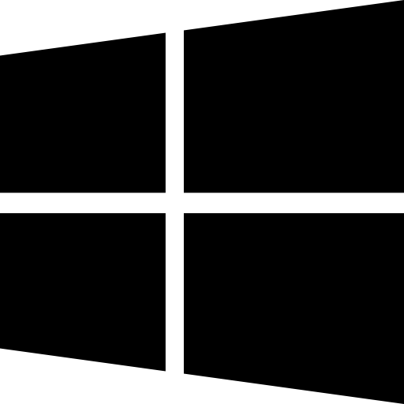

Установка Hogs OS.
 Подготовка
Подготовка
- Соответствие системным требованиям Windows 11 или Windows 10
- Мы не рекомендуем обходить требования Windows 11 из-за возможных проблем с обновлениями и игровыми античитами.
- 64-битный процессор
- Если у вас процессор на базе ARM , вы сможете использовать Hogs OS только с Windows 11.
- Знание общих принципов устранения неполадок и использования Windows
 Загрузить ISO
Загрузить ISO
Чтобы полностью переустановить Windows, вам необходимо загрузить ISO-файл нужной вам версии Windows , который будет использоваться далее в руководстве.
Кнопки ниже загружают ISO напрямую с серверов Microsoft. Он получает последнюю версию желаемой вами версии Windows для процессоров Intel и AMD . ISO-образы ARM должны быть созданы вручную .
Сетевые драйверы
По умолчанию в Windows могут отсутствовать сетевые драйверы вашего компьютера, то есть после переустановки на вашем компьютере может не быть подключения к Интернету.
По этой причине мы настоятельно рекомендуем вам выполнить одно из следующих действий:
- Загрузите сетевые драйверы заранее и сохраните их на внешнем носителе.
- Возможность загрузки и переноса сетевых драйверов с другого устройства в дальнейшем.
Переустановка Windows
Прежде чем продолжить, мы настоятельно рекомендуем вам создать резервную копию всех ценных данных на внешнем диске или в облачном сервисе .
USB-накопитель
- Загрузите последнюю версию Ventoyи извлеките его там, где вам удобно.
- Внутри папки Ventoy запустите Ventoy2Disk
- В открывшемся окне выберите ваш USB-накопитель и нажмите «Установить».
- Скопируйте загруженный файл ISO на USB-накопитель (с надписью Ventoy)
- Отсоедините все кабели, обеспечивающие подключение вашего компьютера к Интернету, например, кабель Ethernet.
- После загрузки в меню Ventoy выберите ISO-образ Windows с помощью клавиш со стрелками, нажмите Enter, щелкните «Загрузить в обычном режиме » и нажмите Enter ещё раз.
- Если вы устанавливаете Windows 11, после загрузки в программу установки Windows дважды нажмите «Далее», затем нажмите «Предыдущая версия программы установки» в левом нижнем углу окна.
- Выберите предпочтительные языковые настройки, нажмите «Далее» , затем нажмите «Установить сейчас».
- При появлении соответствующего запроса нажмите «У меня нет ключа продукта» , поскольку Windows активируется автоматически позже (при условии, что вы ранее активировали Windows законным образом).
- Выберите версию Windows (Рекомендуется Windows Pro . Windows Home официально не поддерживается.)
- Примите лицензионное соглашение и нажмите Выборочная установка: установка только Windows (расширенная)
- На экране «Куда вы хотите установить Windows?» выберите один из следующих вариантов:
- Хранение данных (рекомендуется)
- Удаление данных на одном диске
- Удаление данных на всех дисках
- Подождите, пока Windows установится
 Начальная настройка ( OOBE )
Начальная настройка ( OOBE )
Вы можете посмотреть видео или воспользоваться «Письменными инструкциями» для этого раздела.
 Обновления драйверов
Обновления драйверов
Драйверы — это важные программные компоненты, которые позволяют ОС взаимодействовать с аппаратными устройствами. Хотя в Windows есть основные драйверы, некоторым устройствам для корректной работы требуются внешние драйверы. В Atlas есть два варианта внешних драйверов:
Пока не подключайтесь к Интернету, выполните следующие действия:
- Откройте Настройки -> Центр обновления Windows.
- Временно приостановить обновления как минимум на одну неделю
- Подключите ваше устройство к Интернету
- Перейти к следующему разделу
Установка Hogs OS
- Откройте Microsoft Edge, найдите hogsos.space.
- На сайте нажмите «Скачать», «Скачать сейчас» затем скачайте HogsOS.zip
- Извлеките обе загрузки на рабочий стол.
- запустите Disable Drivers Installation in Windows Update.reg извлеченный файл Hogs OS и перезапустите
- Откройте Настройки и обновите Windows, включая необязательные обновления, пока не останется доступных обновлений. Если приостановлено, нажмите Возобновить обновления , чтобы выполнить этот шаг
- Если при обновлении Windows 10 возникла ошибка, посетите нашу страницуОшибки Центра обновления Windows для исправления, повторите попытку обновления и продолжайте следовать оставшейся части руководства по установке
-
Откройте Microsoft Store и обновите все приложения.
-
Может появиться запрос на обновление Microsoft Store в первую очередь.
- Перезапустите после завершения всех обновлений. После перезапуска снова проверьте наличие обновлений, пока не останется доступных обновлений.
-
Открыть AME Wizard Beta.exe
-
Если от SmartScreen выводится предупреждение о том, что AME Wizard является нераспознанным приложением , пропустите это предупреждение, нажав «Подробнее» и «Выполнить в любом случае».
- Перетащите HogsOS.apbx из папки в AME Wizard
- Следуйте инструкциям на экране мастера AME , чтобы установить Atlas Playbook.
Ваша старая установка Windows
Если ранее вы выполняли шаги, в которых упоминалась Windows.oldпапка, вы можете найти свои предыдущие данные Windows в начале диска Windows в формате Windows.old.
Когда вы будете уверены, что извлекли из него все ценные данные, выполните следующие действия:
- Откройте Параметры Windows -> Система -> Хранилище.
- Нажмите «Временные файлы» и дождитесь завершения сканирования файлов.
- Выберите Предыдущая версия Windows, а затем нажмите Удалить файлы.
Получение драйверов
- Ручная установка драйверов: если вы ранее выбрали этот вариант, мы рекомендуем вам ознакомиться с нашим руководством по установке драйверов, которое поможет вам настроить необходимые драйверы.
- Установка и обновление драйверов из Центра обновления Windows: Если вы ранее выбрали этот вариант, получите драйверы, вручную проверив наличие обновлений Windows. Чтобы получать их автоматически, включите автоматическое обновление Windows .
 Все готово!
Все готово!